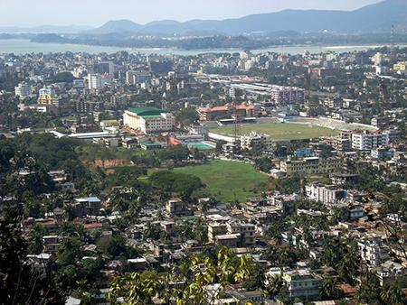
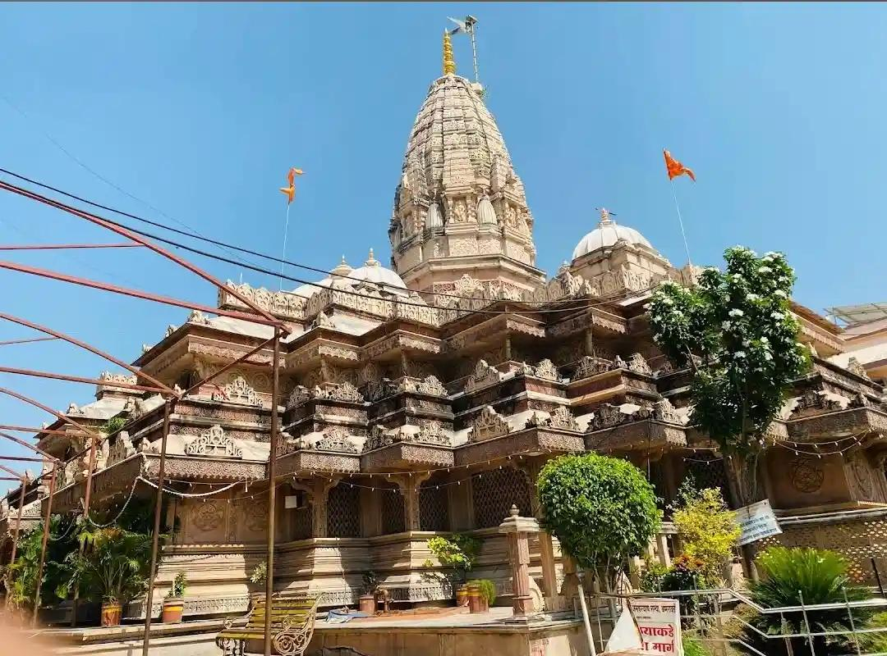
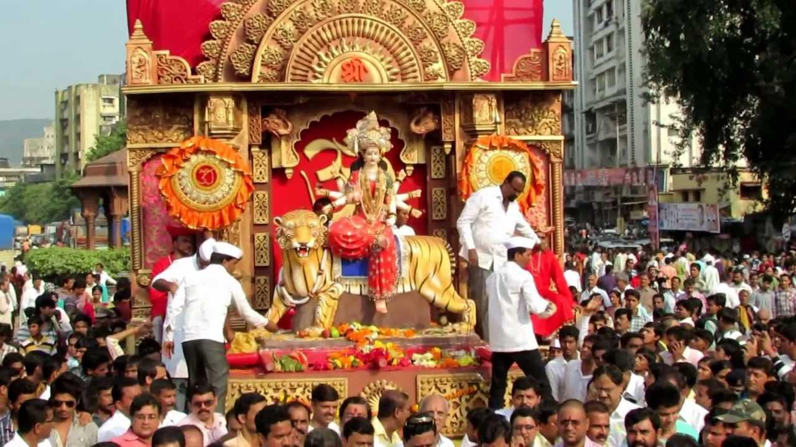
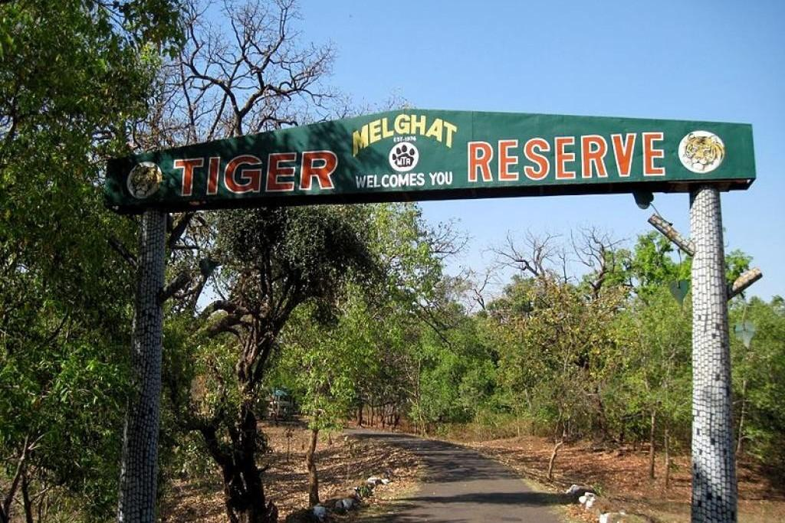
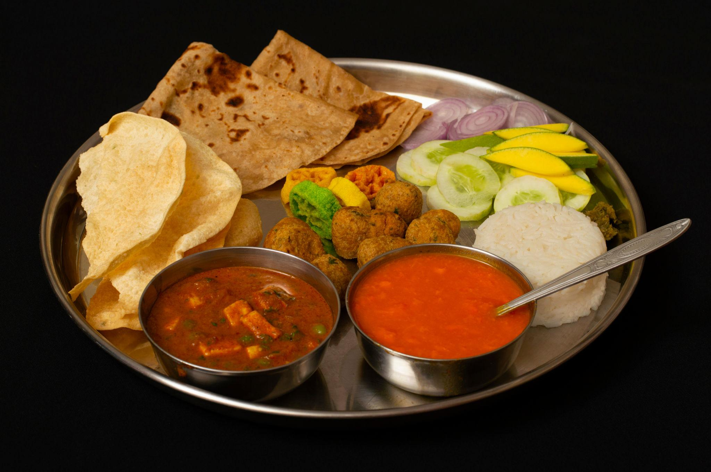
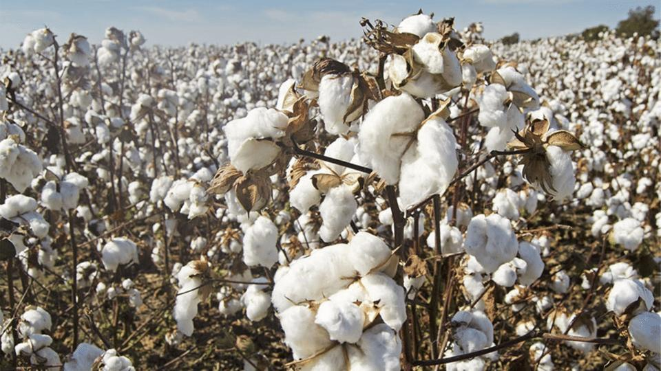
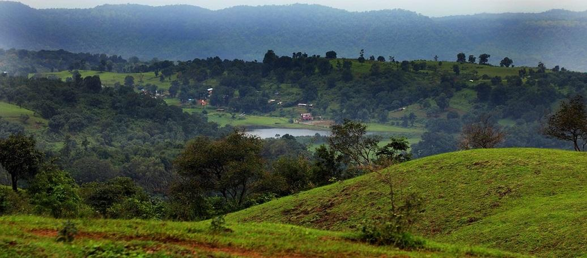
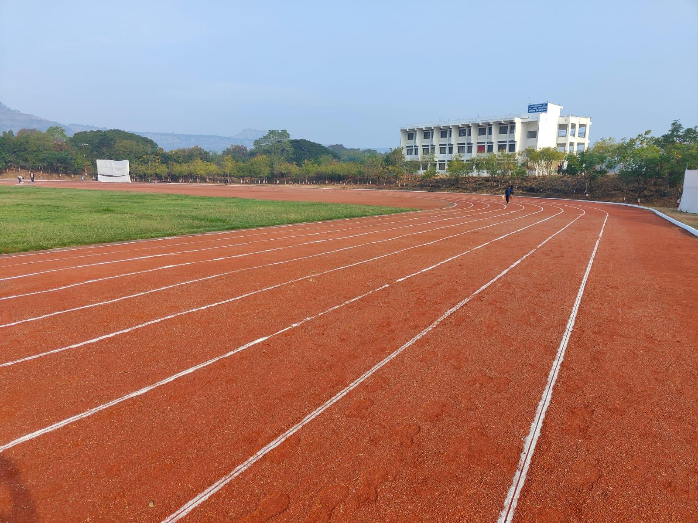

About

Located approximately 156 km west of Nagpur, Amravati serves as the administrative headquarters of the Amravati division. Its ancient name was Udumbaravati, which evolved from the abundance of Audumber trees in the region. Today, it is recognized as a bustling educational, commercial, and industrial center featuring modern amenities while retaining its rich historical charm.
- Location: It sits in the Vidarbha region of Maharashtra, India, about 156 km west of Nagpur.
- Famous as:The "Cultural Capital of Vidarbha," famous for ancient temples, cotton, and the Melghat Tiger Reserve.
History

The city's recorded history traces back through multiple eras, evolving notably during the late 18th century when it was reconstructed and prospered by the Maratha ruler Ranoji Bhosle following the defeat at Gavilgad. It subsequently came under British administration in the 1850s, leading to extensive railway and infrastructure development. The city also played a pivotal role in India's independence movement.
- Ancients called the city Udumbaravati because many Audumber trees grew there. In the late 18th century, a Maratha ruler named Ranoji Bhosle rebuilt the town after a big battle. The British took control of the area in 1853 to grow and ship cotton. Later on, the city became a major hub for fighters during India's freedom movement.
Culture

The culture of Amravati is a vibrant amalgamation of diverse communities, including various tribal groups like the Korku, Kolam, and Nihal, who inhabit the hilly regions. Traditional Maharashtrian attire, such as dhotars and sarees, is common. The city is deeply spiritual and is dotted with majestic shrines, including the ancient Shri Ambadevi Temple, which is associated with the legend of Rukmini Haran.
- Main Festivals:Diwali, Holi, Navratri, Ganesh Chaturthi, and Eid.
- Traditional Arts:Varhadi folk music, Gondi tribal dances, and traditional wrestling styles.
- Language:Marathi and the local Varhadi dialect are spoken by most people.
Tourism

Amravati offers a spectacular blend of religious heritage and natural wonders. Key attractions include the serene suburban lakes of Wadali Talao and Chatri Talao. Thrill-seekers and nature lovers can explore the nearby Melghat Tiger Reserve or visit the scenic Chikhaldara Hill Station, the only coffee-growing region in Maharashtra.
- Chikhaldara Hill Station: Cool mountain weather and deep green valleys.
- Melghat Tiger Reserve: Massive forest sanctuary with jungle jeep safaris.
- Shri Ambadevi Temple: Ancient sacred temple in the heart of the city.
Famous Food

The culinary scene in Amravati is heavily influenced by authentic Vidarbha-style Varhadi cuisine. Local favorites often feature fiery, spicy flavors and include regional staples like Puran Poli, Nyahari, and Basundi. Traditional vegetarian curries utilizing local produce like vangi (brinjal) and bhindi (okra) are daily staples in households across the district.
- Famous Food:Varhadi rassa, Puran Poli, and spicy Nyahari.
- Local Specialty:Shrikhand, Basundi, and fresh local oranges.
Economy

The economy of Amravati is largely agrarian, supported by the fertile lands irrigated by the Tapi, Wardha, and Purna rivers. It is a major agricultural marketplace where crops like sorghum, as well as vast amounts of cotton, are cultivated. The city is highly industrialized as well; its historic cotton mills supply major textile hubs like Mumbai and Kolkata.
- Key Industries:Textile mills, cotton ginning, oilseed pressing, and plastic manufacturing.
- Main Crops:Cotton, soybeans, pigeon peas (tur dal), and sweet local oranges.
Environment

Blessed with diverse geographical features, Amravati's environment ranges from fertile plains in the river basins to the rugged, forested terrains of the Satpura range. The region houses massive conservation areas like the Melghat Tiger Reserve and Gugarnal National Park, providing crucial habitats for Bengal leopards, sloth bears, and numerous bird species.
- Climate:Hot and dry summers, pleasant winters, and heavy monsoon rains from June to September.
- Key Rivers:The Tapi, Purna, and Wardha rivers provide vital water to the entire region.
- Protected Areas:Melghat Tiger Reserve, Wan Wildlife Sanctuary, and Gugamal National Park.
Sports

Amravati is a legendary destination for sports in India, largely due to the presence of the Hanuman Vyayam Prasarak Mandal (HVPM), which is one of the country's largest sports and physical education institutes. The city promotes traditional Indian wrestling, indigenous martial arts, and modern gymnastics, producing several national and international athletes over the years.
- Traditional Sports:Indian wrestling (Kushti), Mallakhamb, Kabaddi, and Kho-Kho.
- Focus: Promoting youth fitness and teaching ancient martial arts at the famous Hanuman Vyayam Prasarak Mandal.